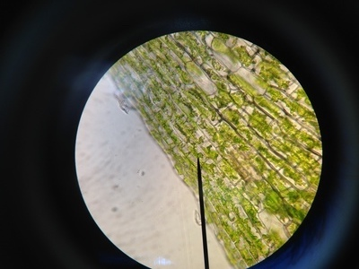
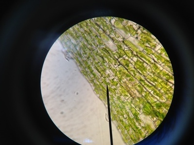
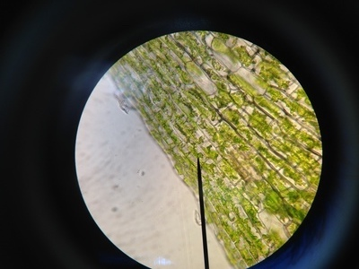

Jessica Dang
I have recently obtained a B.S. in Biology at the University of California, Riverside. Spending my time at this school has allowed me to hone my skills in laboratory settings. It has also given me the resources to build my knowledge on science related subjects, bettering my understanding of the foundations of the careers in health that I am considering. In addition to the biology and chemistry labs taken at this school, I have also participated in a Dynamic Genome course which is a more research oriented lab course. I was involved in a cultural club (VSA) on campus and played intramural sports for co-ed volleyball.
I am now working for and have been volunteering at a hospital in Fountain Valley, California since the beginning of the summer of 2017. I am experienced with patient care services, hospital facilities, and outside clinics. I have often shadowed nurses and phlebotomists in the hospital through my phlebotomy externship and volunteering services. I have also shadowed and assisted doctors, a PA, and medical staff when working at FVRH, Bio-path, and Dr. Kevin K. Tieu’s OB-GYN clinic. I am familiar with providing quality customer service from serving at a restaurant as well. In addition to this, I have taken many laboratory courses including but not limited to chemistry, biology, dynamic genome, and microbiology. Currently, I am also involved in a church youth group organization where I interact and teach a group of kids every weekend. These experiences and activities help improve my socialization, communication, and leadership skills, which are essential when being around diverse demographics of people. They demonstrate my competence to quickly adapt to any type of situation at a quick pace, and help improve the quality of patient care.
Aside from those factors, I enjoy playing volleyball in my free time, whether it be at school or at church. I also like spending time with friends and family, playing instruments, and creating art. Traveling is another passion of mine, especially since I studied abroad at Yonsei University in South Korea during the summer of 2019. I am trying to pursue a career in medicine. Research on biomedical devices and new patient treatment options is something I keep up with and would like to participate in later on should an opportunity arise.
Experience
TNTT Church Youth Group Leader
• Create and teach lessons to kids (5 yrs-17 yrs)
• Organize and plan events
• Lead weekly activities for members
• Help set up camps
• Play and cocoach volleyball
Hospital Volunteer
• Patient Care
• Escort and discharge patients
• Translate and answer calls
• Transport and sort out paperwork for HR
• Clean gurneys/wheelchairs and fold gowns
• Dietary work
Student Phlebotomist
• Draw blood from 120+ patients (all ages)
• Perform capillary punctures
• Use vacutainers and butterflies
• Centrifuge/aliquot samples
Server
• Customer service
• Host/serve customers
• Work the cash register
• Flambé and cook in front of customers
• Clean, sweep, and mop restaurant when opening/closing
Phlebotomy Externship/Shadowing
• Draw blood from 120+ patients
• Shadow and assist phlebotomists
• Perform heel sticks (babies in NICU too)
• Perform venipunctures and dermal punctures
• Use vacutainers, butterflies, and syringes
• Take blood cultures
• Experience in various wards within the hospital
• Graveyard and regular shifts
Radiology Front Desk Representative
• Schedule scans and invasive (IR) procedures
• Page on-call staff
• Monitor/create worklists
• Enter critical values
• Send out reports
Shadow OB-GYN MD Kevin K. Tieu and PA-C Tarryn Tran
• Assist in and shadow medical procedures
• IUD insertions/removals
• Pap smears
• Antepartum/post partum check ups
• Transvaginal US
• NST (non stress test)
• EMB (endometrial biopsies)
• WWE (well woman exams)
• Vaginal cultures
Pathology Assistant
• Assist Dr. Malhotra (pathologist) and pathology coordinator
• Send specimens/reports out to testing facilities
• Order stains for slides
• Recieve frozen sections and observe procedure
• Record send outs and returned blocks/slides
Education
Univeristy of California, Riverside
US Colleges in Anaheim
Yonsei University (South Korea)
Irvine Valley College/Saddleback College
Skills
Languages
• English
• Vietnamese
• Spanish
Mechanical skills
• Microsoft Word and Excel
• Powerpoint
• Spreadsheet
• Photoshop
Laboratory skills
• Polymerase chain reaction (PCR)
• Transformation
• Electrophoresis
• Computer data analysis
• DNA extraction
• Pipetting
• Centrifuging
• Aliquoting
• Primer creation
Portfolio
 


